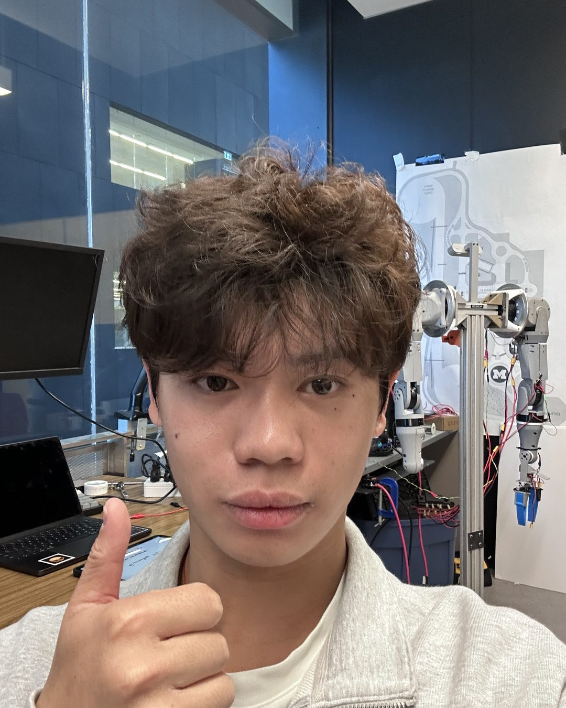

WATonomous · Humanoid team, robot learning
Sept 2026 – now
- Fine-tuned π₀.5 so the Pioneer arm picks up a cube and places it in a tray in Isaac Sim. [case study]
- Wrote the leader-arm recorder that collects its demonstrations as a LeRobot dataset.

Mechatronics Engineering, University of Waterloo
I work on robots that learn to handle things. On the WATonomous humanoid team I fine-tuned π₀.5, a vision-language-action model, for pick and place. On my own I'm training a Unitree Go2 to walk with reinforcement learning in Isaac Lab.
Before university I was co-captain and lead programmer of FTC team 18844, which represented Team Canada at the 2025 FIRST World Championships.
Open to robotics and ML co-op roles.
Sept 2026 – now
Sept 2023 – Apr 2025
Sept 2026 – Apr 2031
WATonomous · Sept – Oct 2026
A vision-language-action model fine-tuned so a humanoid arm picks up a cube and places it in a tray, trained on demonstrations I recorded with a leader arm in Isaac Sim.
1st place, BOTS hackathon · Sept 2026
A dual-arm Bracket Bot that makes a sandwich on its own. A fine-tuned π₀ policy handles the hard grasps, and OpenCV with inverse kinematics handles the simple ones.
Isaac Lab · in progress
A walking policy for a Unitree Go2, trained from scratch with PPO in a custom Isaac Lab environment.
ROS2 · Isaac Sim · May – July 2026
A Nova Carter that maps a maze it hasn't seen with SLAM, then plans and drives to the goal with Nav2.
Eureka Hacks
Ask for a tool in plain language and the arm finds it on the bench with YOLOv8 and hands it to you.
FIRST Worlds 2025 · Sept 2023 – Apr 2025
Co-captain and lead programmer: PID pathing on fused odometry, and a vision pickup built on OpenCV and a CNN.
2nd place, RythmHacks 2025 · Oct 2025
A desk turret that watches you study and fires a ping-pong ball when you get distracted. YOLOv8 spots it; PID loops aim.
Hover or tap a skill to see which projects I used it in.